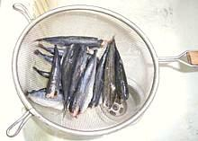

Smelt, gutted
Scad, pinch fins
Scad, cut backbone
Scad, gutted

Scad, draining
Scad, dusting
Scad, frying
Wire Spider

Smelts in Wire Drain Basket
Procedure
The examples here are Smelt, small enough to eat head bones and all, and Round Scad, larger and with backbone and head too strong to be edible. While Great Lakes Smelt were traditionally eaten "head guts and feathers", the Smelts we get these days tend to be bitter if not gutted. Round Scad definitely should be gutted and it comes out much less torn up if you remove the head as shown.
Smelts:
One way to gut them is to just break in from the bottom and grab the gills, then pull down and forward. Along with the gills, the innards will pull out without breaking the belly. Another way is to use a thin, razor sharp filleting knife. Insert the tip jut under the head, sharp side out, and slit back to the vent, near the tail. With this method you can also remove the dark blood works just below the backbone. Just scrape it out with a fingernail and rinse under running water. A batch of small to very small smelts (56 fish) took me 35 minutes to gut using the split belly method with rinse.Scad, etc:
With a larger, tougher fish like the Round Scad, first pinch the bottom fins just behind the head and pull them off.- With your kitchen shears cut just behind the head from the top just deep enough to sever the backbone.
- Now you can pull the head off and all the innards will come out with it leaving the body of the fish in good condition.
- Rinse the fish and drain cavity side down.
Frying:
Select an appropriate high temperature oil. See our Cooking Oils page for the best choices.- Bring your oil up to temperature. A Infrared Gun is great here, but a long probed thermometer that goes to at least 400°F/200°C can be used. The ideal temperature is 375°F/190°C. Keep your oil well below smoking temperature at all times.
- Dry the fish with paper towels. There should be no free water.
- Dust the fish lightly with lightly salted flour. Smelt can be coated all at once by shaking in a plastic bag with the flour. For larger fish, coat just enough for one batch just before putting them in the oil or the coating could get soggy.
- Make sure your oil is at the right temperature and put the fish in (being careful not to splash). Stir often until sizzling decreases and fish is lightly browned. Caution: don't fry them to the color you want, because they will darken significantly while draining.
- Scoop out with a wire spider or other device that allows the pieces to drain freely. Drain further on a wire rack or wire basket. This will give you less oily fish than drying on paper towels.
Hints
Know Your Fish:
(hints for many kinds of fish are linked from our Varieties of Fish page (very large page). Some fish stay firm and manageable while others tend to break up.Coating Fish:
While I fry some fish naked, most fish I give a light powdering of Rice Flour, which doesn't brown much but is good for the taste of the fish. If you want browner, mix in some all-purpose Wheat Flour. I also usually whirl some Salt in my spice grinder and mix it with the flour (it mixes better ground). A good way with smelts is to put them in a plastic bag, pour in the flour and shake until well coated. Pour out into a strainer and shake it a bit to remove excess flour.Batter for Fish:
Many recipes call for coating fish with batter, sometimes much too heavy a batter. If you want pancakes, make pancakes, we're frying fish here. A quick dip in buttermilk followed by a dusting of lightly salted (or seasoned) flour is generally plenty. Dipping in egg will make the coating thicker.Marinading:
If you marinade fish, let them soak up the marinade for about 1/2 hour in the refrigerator. Fish spoil fast - don't leave them out. If you use leftover marinade for a sauce bring it to a high simmer for 5 minutes in a saucepan to make sure it's safeOil:
Use a durable high temperature oil - see our Cooking Oils page for good choices. I use Olive Pomace which has a high smoke point and almost no olive flavor so it won't overpower the fish, and it's quite economical. Peanut Oil is also pretty good. Don't use Extra Virgin or any other "unrefined" oil - they can't stand the heat.Temperature:
temperature at all times. Ideally keep your oil between 360°F and 380°F (182°C to 193°C). It should never smoke.Don't Overload Your Oil:
Fry in small batches so the temperature doesn't drop too far or you'll end up with heavy, oily fish with a steamed flavor. Small batches finish faster so it won't take much more time.Draining
Drain on a wire rack of wire basket set over a pan. Draining on paper towels will end up with more oily fish.Clean-up:
Clean oil off your stove as soon as possible. heat will dry the oil into varnish which becomes more difficult to remove with each passing hour.Serving:
Serve fried fish immediately as there is still enough moisture in them to reduce the crispness. Small fish can be re-crisped reasonably well in a 350°F/177°C oven - 10 minutes for smelt, a little longer for larger fish.Re-using Oil:
Oil degrades with use, different oils at greatly different rates. Polyunsaturated oils (corn, soy, "vegetable") degrade very rapidly and should never be reused, while Olive is relatively durable. See the "IOS/OSI" column in our Oil Chart page for relative durability (IOS low numbers are better, OSI high numbers are better). Oil that isn't yet tired and hasn't been overheated can be used again (for fish only) within a reasonable time (tired oil foams a lot). Heat it long enough that it no longer "pops", indicating all water has been evaporated. Filter it, still quite hot, through one layer of plain paper towel in a wire strainer. Store in a tightly capped jar.
Tools
Fryer:
The ideal device for deep frying modest quantities of just about anything is the Indian Kadhai, similar to a wok but with somewhat different geometry. The sides are wide enough and high enough to contain most of the splattering and it requires a very modest amount of oil to fry a reasonable amount of fish. They do a lot of deep frying in India and can't afford to waste oil.Basket Fryer:
The Western basket fryer is an efficient and effective device but requires quite a bit of oil and tends to splatter a lot of oil about, so be prepared to do clean-up, lots of clean-up.Spider:
A wire Spider will allow the fish to drain well and quickly as you remove it from the oil (photo to the left).Wire Basket or Rack
Draining on a wire rack or basket you will get fish with less oil than if drained on paper towels, which tend to quickly get saturated with oil.Thermometer:
An Infrared Thermometer is ideal, but a thermometer with a long probe that goes up to at least 400°F/200°C can be used.